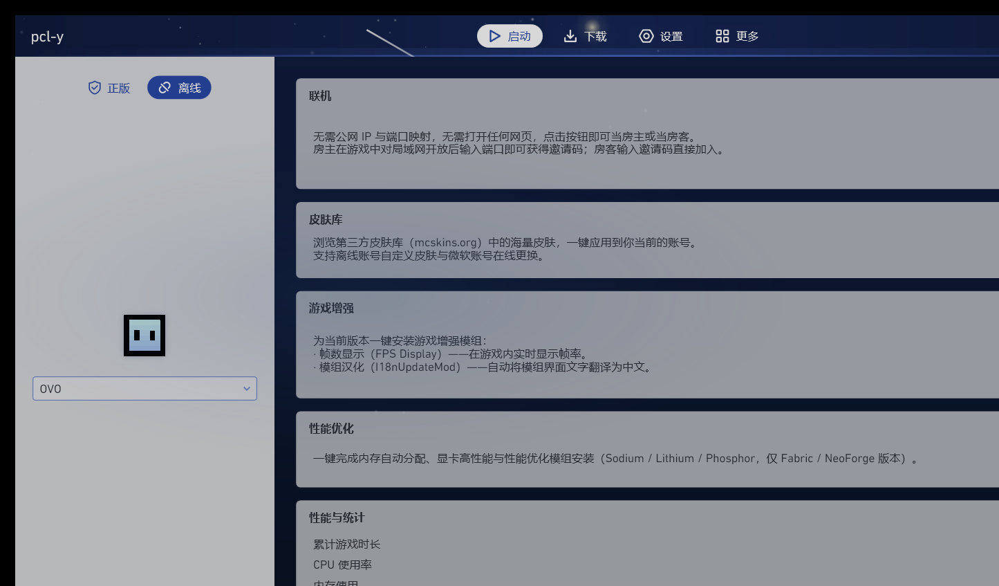
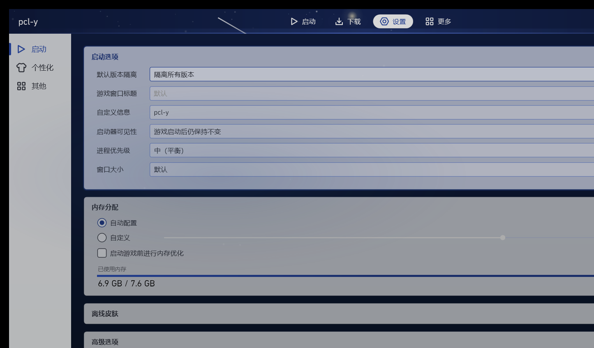

每一项都可以单独使用，互不影响。不需要额外配置，装完就能用。
自动分配内存、强制显卡高性能模式，并按你的加载器自动装入 Sodium / Lithium / Phosphor 优化模组。同配置下比原版 PCL2 启动快 12 秒。
浏览第三方皮肤库的海量皮肤，一键应用到当前账号。也支持自定义皮肤与微软账号在线更换。
一键安装帧数显示与模组汉化模组。进游戏就能实时看到帧率，中文界面自动生效。
基于 EasyTier 的 P2P 组网。无需公网 IP 与端口映射，点一下按钮就能当房主或加入房间，数据在设备间直连传输。
累计游戏时长、CPU 与内存使用一目了然，并内置内存释放与 Intel 核显优化策略。
跟随上游 PCL 的节奏同步代码，并加入 PCL-Y 自己的增强。GitHub Releases 一键检查与更新。
界面语言与交互习惯保持一致，你不需要重新学习什么.


从 GitHub Releases 获取 pcl-y-setup-1.2.0.msi，双击安装。
首次启动让你选择已有 PCL，或让 PCL-Y 自己下载安装 Java 与游戏本体。
在「更多」里点开性能优化，剩下的交给它。想联机就把「联机」打开。
PCL-Y 不修改 PCL 的核心逻辑，只在其上增加独立模块。你可以单独使用每个功能，也可以完全不用它们——它就是一个普通的 PCL。
不会。PCL-Y 安装在独立目录与配置中，与已有 PCL 并存。实例与设置互不干扰。
联机基于 EasyTier 的 P2P 组网，数据在设备之间直连传输，不经过中心服务器。但它仍是实验性功能，建议先在信任的网络里试用。
目前仅支持 Windows，基于 .NET Framework 4.8。安装包为简体中文 GBK。
去 GitHub Issues 提 issue，附上启动器日志与复现步骤会更快被解决。